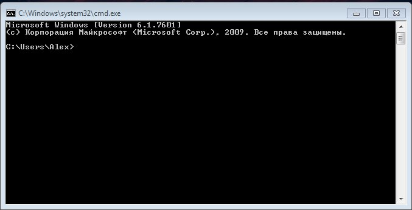

Лабораторная #1 по ОС
Лабораторная работа №1 - Работа в оболочке командной строки. PowerShell, CMD.
Цель работы: Ознакомиться с работой в командной строке в системе Windows.Введение
Командный интерпретатор (интерпретатор командной строки) - это компьютерная программа являющийся частью операционной системы, обеспечивающая базовые возможности управления компьютером посредством интерактивного ввода команд через интерфейс командной строки или последовательного исполнения пакетных командных файлов. Как правило его функции сводятся к предоставлению пользователю возможности запускать другие программы, может также содержать некоторые базовые команды ввода-вывода и свой простой скриптовый язык программирования. В операционные системы MS DOS и Windows 95 включен командный интерпретатор command.com, Windows NT включен cmd.exe, в OS/2 командный интерпретатор тоже называется cmd.exe. Самый распространенный командный интерпретатор в Linux и FreeBSD — bash, помимо которого есть большое семейство других. Как правило, при низкоуровневой настройке ОС у пользователя есть возможность менять командный интерпретатор, используемый по умолчанию.
К функциям интерпретатора командной строки относятся:- Взаимодействие с пользователем (редактирование командной строки, история команд и т.д.).
- Обработка (расширение) шаблонов имен ("*", "?" и т.д.);
- Перенаправление ввода-вывода команд;
- Управление заданиями;
Обобщая вышесказанное - консоль интерпритатор командной строки это текстовый интерфейс, в котором команды отдаются путем ввода текстовых строк с клавиатуры и отображаются на монитор.
Инструменты
Если мы говорим про Windows, то это нижеописанные, если мы говорим про Unix, системы то смысл будет похожий, но способы вызова несколько различаются, но об этом в более поздних практических. Первый инструмент это обычная консоль, наследник Winodws NT - CMD. Второй инструмент это PowerShell. В первом случае это просто интерпретатор командной строки и ничего более, то во втором случае перед вами встанет намного более гибкое средство автоматизации администрирования системы.
Чтобы их запустить требуется:
- Нажать на клавишу win (или по другому кнопка "Пуск") и в поиске набрать или cmd или PowerShell
- Вызвать меню "Выполнить" при помощи сочетания клавиш win+R и написать туда "cmd" или "PowerShell"
Или
И вы увидите одну из картинок
Принципы работы
Работать с ними просто, главное это набить руку, ниже мы рассмотрим основные приемы работы, что, как и с чем их "кушать".
Выше звучало слово интерпретатор, сначала разберемся с тем, что это такое и чем он отличается от уже известного вам компилятора. И компиляторы и интерпретаторы преобразуют исходный код в машинный код, только разными путями. Интерпретатор читает исходный код программы и выполняет его. Преобразование исходного кода в бинарный и выполнение выполняется построчно.
В первом случае это [1]исходный код программы -> [2]интерпретатор -> [3]ОС -> [4]результат
Компиляторы же, полностью преобразовывают исходный код программы в бинарный (а не построчно, как в случае с интрепретаторами), который ОС может выполнять самостоятельно. То есть, для запуска программы иметь компилятор нет необходимости.
Во втором случае это [1]исходный код программы -> [2]компилятор -> [3]Компановщик ->[4]объектный код -> [5]ОС -> [6]результат
Теперь про работу в консоли, когда вы запустите командную строку, то перед вами будет следующее окно:
Оно состоит из следующих частей:
- То, что выделено красным - это текущая директория, служит для указания той директории в которой в данный момент работает, находится пользователь (по аналогии с обычным файловым проводником)
- То, что выделенной жёлтым это сама команда и каретка для ввода символов
Если нажать на клавиатуре Enter, то команда выполниться (или можно сказать интерпритируется) в машинный код понятный для ПК, результат выполнения представлен на скриншоте ниже, в данном случае мы просто вывели список директорий и файлов в текущей директории.
Клавиши для работы с консолью:
- Собственно сам Enter - для исполнения команд :)
- Стрелки вверх и вниз на клавиатуре - позволяют пролистывать уже набранные команды;
- Стрелка вправо на клавиатуре - выводит посимвольно предыдущую команду;
- Клавиша Tab - служит для подсказки по командам, если вы не знаете как дальше она пишется, она позволяет перебрать похожие команды;
- Клавиша F7 - показывает историю команд с возможностью выбора команды
- F1 - Работает так же как и стрелка вправо
- F3 — Выводит последнюю, и только последнюю, в истории команду целиком.
- F5 — Выводит последние введенные команды по порядку, также как и стрелка вверх.
- F6 — Вставляет символ EOF на текущую позицию командной строки, что аналогично нажатию комбинации CTRL + Z.
- CTRL + C - Служит для прерывания команды, в консоли обозначается как ^
Операторы командной строки
Операторы конвейера - это символ вертикальной черты | Служит для объединения нескольких команд, например, команда ниже выведет все файлы в текущей папке у которых расширение .txt
dir | find ".txt"
Оператор объединения команд - &, в примере снизу сначала выполниться команда1, потом команда2, потом команда3
Команда1 & команда2 & команда &
Оператор || - "или", в примере снизу команда2 будет выполняться только в том случае, если команда1 не выполнилась
Команда1 || команда2
Так же для группировки команд могут использоваться круглые скобки, как в примере ниже:
- (Команда1 & Команда2) && Команда3 – Если Команды1 и Команды2, выполнятся успешно, произойдет выполнение Команды3.
- (Команда1 & Команда2) || Команда3 — Если Команды1 и Команды2, не выполнятся, произойдет выполнение Команды3.
Перенаправления ввода/вывода
Таковыми операторами являются >, >>, <. Они нам могут пригодиться как минимум в трех ситуациях:
- Просмотр логов бат-файла
- Чтение длинных хелпов по консольным утилитам
- Подхватывание каких-либо переменных из лежащего рядом файла
Для того, чтобы перенаправить текстовые сообщения, выводимые какой-либо командой, в текстовый файл, нужно использовать конструкцию
команда > имя_файла
Если при этом заданный для вывода файл уже существовал, то он перезаписывается (старое содержимое теряется), если не существовал — создается. Можно также не создавать файл заново, а дописывать информацию, выводимую командой, в конец существующего файла. Для этого команда перенаправления вывода должна быть задана так:
команда >> имя_файла
С помощью символа < можно прочитать входные данные для заданной команды не с клавиатуры, а из определенного (заранее подготовленного) файла:
команда < имя_файла
Команды
В данном разделе будут перечисленны основные команды, которые потом в задании вы уже будете как то комбинировать и отрабатывать.
Начнём пожалуй с основной команды - это help, в выводе этой команды будут рассматриваться тривиальные команды типа cd, echo и т.д. Чтобы узнать о них нужно ввести cd /? , то есть команду, которую вы не знаете и знак вопроса, примеры подобного на скриншотах ниже.
В справке указывается информация о команде с примерами использования.

Выше в команде был использован символ / он служит для указания ключей у команды. Ключи это дополнительные параметры команды, например команда rmdir(которая каталог удаляет) у неё есть определённые параметры, которые так же можно и комбинировать:
/s - удаляет все дерево каталогов, все папки и подпапки
/q - отключает запрос подтверждения удаления
И применяется это в таком виде:
rmdir /s имя_папки
rmdir /q /s имя_папки
То есть в первом случае удаляется не только папка, а все вложенные в неё папки и файлы, а во втором случае никто не будет спрашивать у вас подтверждения удаления файлов.
Так же перед тем, как отправить вас в самостоятельное изучение, хотелось бы ещё раз сказать как работает команда перехода по файловой системе - cd. А работает она довольно просто
cd имя каталога
Например, данная команда перейдёт по пути c:\home\vasya. Так же у команды есть определённые параметры, узнать их можно их справки.
cd с:\home\vasya
Все, теперь вы более менее готовы :)
Задание
Собственно все самое основное было рассказано выше, теперь время постигать основы. Если что-то не понятно, то читайте ещё раз, вызывайте справку по командам или обращайтесь к преподавателю. Все команды для нижеописанных действий есть в help.
- Изменить вид консоли(подскажу, правой кнопкой маши по заголовку окна и в контекстном меню выбрать "свойства")
- Вывести системное время и дату, потом вывести его в файл
- Переместиться в корень диска и создать там папку с именем root, c помощью dir просмотреть то, что папка действительно создалась.
- Перейти в папку и создать в папке root для подпапки home и etc и dev. В home создать подпапки doc, music, picture и текстовый файл. В etc создать 3 текстовых файла. В dev создать 2 подкаталога с именами input и bus и 2 текстовых файла cdrom и dvd. В конце с помощью команды просмотреть все дерево каталогов.
- Скопировать в root/home/picture какую-нибудь картинку (в пределах разумного).
- Переименовать эту картинку в image.jpg
- С помощью команды вывести в консоль какое-нибудь сообщение(в пределах разумного)и потом перенаправить вывод сообщения в файл в директорию /home (вы их выше создавали)
- Очистить экран от следов работы
- Создать текстовый файл, а потом найти текстовую информацию в текстовом файле
- Удалить все следы работы;